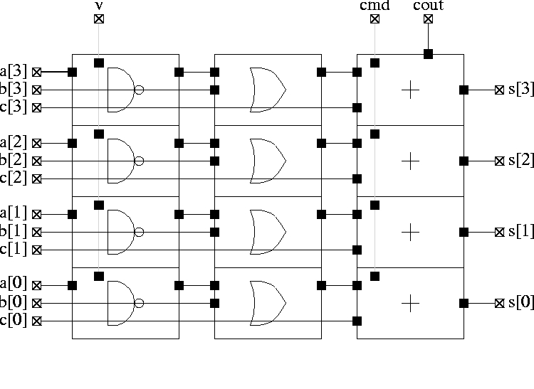

Stratus – Procedural design language based upon Python
Stratus is a set of Python methods/functions dedicated to procedural generation purposes. From a user point of view, Stratus is a circuit’s description language that allows Python programming flow control, variable use, and specialized functions in order to handle vlsi objects.
Based upon the Hurricane data structures, the Stratus language gives the user the ability to describe netlist and layout views.
A configuration file can be used to direct the generation process of Stratus. With this file, the user can choose the output format (vst, vhdl...), the simulator (asimut, ghdl...), the standard cell library... This configuration file named .st_config.py must be placed either in the HOME directory or in the current directory. This file contains a set of variables used in the process generation of Stratus, as for example :
format = 'vhdl' simulator = 'ghdl'
The default configuration of Stratus uses the Alliance CAD system, ie 'vst' as format and 'asimut' as simulator.
A cell is a hierachical structural description of a circuit in terms of ports (I/Os), signals (nets) and instances.
The description of a cell is done by creating a new class, derivating for class Model, with different methods :
After the description of a cell as a sub-class of Model, the cell has to be instantiated. The different methods described before have to be called.
Then different methods are provided :
A Stratus file must have a .py extension and must begin as follow :
#!/usr/bin/env python from stratus import *
The description of a cell as a sub-class of Model is done as follow :
class myClass ( Model ) :
...
The creation of the cell is done by instantiating the previous class as follow :
exemple = myClass ( name, param )
After the different methods can be called as follow :
exemple.Interface()
exemple.Netlist()
exemple.Save()
...
In order to execute a Stratus file (named file for example), one has two choices :
python file.py
Or :
chmod u+x file.py ./file.py
The names used in Stratus, as arguments to Stratus functions, should be alphanumerical, including the underscore. The arguments of Stratus are case sensitive, so VDD is not equivalent to vdd.
When using vi, it’s possible to have the right syntax highlighting :
:syntax off :source /asim/coriolis/share/etc/stratus.vim
syntax off autocmd BufRead,BufNewfile *.py so /asim/coriolis/share/etc/stratus.vim syntax on




python test.py -n 4
or :
chmod u+x test.py ./test -n 4
The method View permits to open an editor in which one can see the cell being created as shown in the picture below.

This function allows the user to give parameters when creating a cell. When one wants to give values to two parameters, one can type on the shell :
python test.py -n 4 -w 8
The file test.py has then to contain :
nbit, nword = Param ( "n", "w" )
The letters typed on the shell must be the ones given as parameters of function Param.
One can create a generator and instantiate it in another generator. To do that, the model name of the generator must have the form : “file_name.class_name”. Note that if the two generators are not in the same directory, the directory of the generator to be instantiated has to be added in the CRL_CATA_LIB environment variable.
For example, in order to instanciate the addaccu created above in a cell :
n = 4
Generate ( "addaccu.addaccu", "my_addaccu_%dbits" % n
, param = { 'nbit' : n } )
Inst ( "my_addaccu_%dbits" % n
, map = { 'a' : self.netA
, 'b' : self.netB
, 'c' : self.netC
, 'v' : self.netV
, 'cmd' : self.netCmd
, 'cout' : self.netCout
, 's' : self.netS
, 'vdd' : self.vdd
, 'vss' : self.vss
}
)
SignalIn, SignalOut ... – Creation of nets
netA = SignalIn ( "a", 4 )
How to create and use nets.
Differents kind of nets are listed below :
All kind of constructors have the same parameters :
Only CkIn, VddIn and VssIn do not have the same parameters : there is only the name parameter (they are 1 bit nets).
Some functions/methods are provided in order to handle nets :
function Cat : Concatenation of nets, beginning with the MSB
Inst ( 'DpgenInv'
, map = { 'i0' : Cat ( A, B )
, 'nq' : S
, 'vdd' : vdd
, 'vss' : vss
}
)
Or :
tab = []
tab.append ( A )
tab.append ( B )
Inst ( 'DpgenInv'
, map = { 'i0' : Cat ( tab )
, 'nq' : S
, 'vdd' : vdd
, 'vss' : vss
}
)
If A and B are 2 bits nets, the net myNet will be such as :
myNet[3] = A[1] myNet[2] = A[0] myNet[1] = B[1] myNet[0] = B[0]
function Extend : Creation of a net which is an extension of the net which it is applied to
temp = Signal ( "temp", 5 ) tempExt = Signal ( "temp_ext", 8 ) tempExt <= temp.Extand ( 8, 'one' )
method Alias : Creation of an alias name for a net
cin.Alias ( c_temp[0] )
cout.Alias ( c_temp[4] )
for i in range ( 4 ) :
Inst ( "Fulladder"
, map = { 'a' : a[i]
, 'b' : b[i]
, 'cin' : c_temp[i]
, 'sout' : sout[i]
, 'cout' : c_temp[i+1]
, 'vdd' : vdd
, 'vss' : vss
}
)
Some errors may occur :
Inst – Creation of instances
Inst ( model
, name
, map = connectmap
)
Instantiation of an instance. The type of the instance is given by the model parameter. The connexions are made thanks to the connectmap parameters.
param and map are dictionnaries as shown in the example below.
Inst ( 'a2_x2'
, map = { 'i0' : in0
, 'i1' : in1
, 'q' : out
, 'vdd' : vdd
, 'vss' : vss
}
)
You can see a concrete example at :
Some errors may occur :
Generate – Interface with the generators
Generate ( model, modelname, param = dict )
The Generate function call is the generic interface to all generators.
Every generator has it’s own parameters. They must be described in the map dict. Every generator provides a netlist view. Two other views can be generated, if they are provided by the generator. Two parameters have to be given, in order to choose those views :
Some errors may occur :
Place – Places an instance
Place ( ins, sym, point )
Placement of an instance. The instance has to be instantiated in the method Netlist, in order to use the Place function.
Place ( myInst, NOSYM, XY ( 0, 0 ) )
Some errors may occur :
[Stratus ERROR] Placement : the first argument is not an instance.
PlaceTop – Places an instance at the top of the “reference instance”
PlaceTop ( ins, sym, offsetX, offsetY )
Placement of an instance. The instance has to be instantiated in the method Netlist in order to use the PlaceTop function.
The bottom left corner of the abutment box of the instance is placed, after beeing symetrized and/or rotated, toward the top left corner of the abutment box of the “reference instance”. The newly placed instance becomes the “reference instance”.
Place ( myInst1, NOSYM, 0, 0 ) PlaceTop ( myInst2, SYM_Y )
Some errors may occur :
PlaceBottom – Places an instance below the “reference instance”
PlaceBottom ( ins, sym, offsetX, offsetY )
Placement of an instance. The instance has to be instantiated in the method Netlist in order to use the PlaceTop function.
The top left corner of the abutment box of the instance is placed, after beeing symetrized and/or rotated, toward the bottom left corner of the abutment box of the “reference instance”. The newly placed instance becomes the “reference instance”.
Place ( myInst1, NOSYM, 0, 0 ) PlaceBottom ( myInst2, SYM_Y )
Some errors may occur :
PlaceRight – Places an instance at the right of the “reference instance”
PlaceRight ( ins, sym, offsetX, offsetY )
Placement of an instance. The instance has to be instantiated in the method Netlist in order to use the PlaceTop function.
The bottom left corner of the abutment box of the instance is placed, after beeing symetrized and/or rotated, toward the bottom right corner of the abutment box of the “reference instance”. The newly placed instance becomes the “reference instance”.
Place ( myInst1, NOSYM, 0, 0 ) PlaceRight ( myInst2, NOSYM )
Some errors may occur :
PlaceLeft – Places an instance at the left of the “reference instance”
PlaceLeft ( ins, sym, offsetX, offsetY )
Placement of an instance. The instance has to be instantiated in the method Netlist in order to use the PlaceTop function.
The bottom right corner of the abutment box of the instance is placed, after beeing symetrized and/or rotated, toward the bottom left corner of the abutment box of the “reference instance”. The newly placed instance becomes the “reference instance”.
Place ( myInst1, NOSYM, 0, 0 ) PlaceLeft ( myInst2, NOSYM )
Some errors may occur :
SetRefIns – Defines the new “reference instance” for placement
SetRefIns ( ins )
This function defines the new “reference instance”, used as starting point in the relative placement functions. It’s regarding the abutmentbox of the instance ins that the next instance is going to be placed, if using the appropriate functions.
Note that the more recently placed instance becomes automaticaly the “reference instance”, if SetRefIns isn’t called.
Place ( myInst1, NOSYM, 0, 0 ) PlaceRight ( myInst2, NOSYM ) SetRefIns ( myInst1 ) PlaceTop ( myInst3, SYM_Y )
myInst3 is on top of myInst1 instead of myInst2.
Some errors may occur :
DefAb – Creates the abutment box of the current cell
DefAb ( point1, point2 )
This function creates the abutment box of the current cell.
Note that one does not have to call this function before saving in order to create the abutment box. The abutment box is created nevertheless (given to placed instances). This function is usefull if one wants to create an abutment before placing the instances.
DefAb ( XY(0, 0), XY(500, 100) ) Place ( self.inst, NOSYM, XY(0, 0) )
Some errors may occur :
ResizeAb – Modifies the abutment box of the current cell
ResizeAb ( dx1, dy1, dx2, dy2 )
This function modifies the abutment box of the current cell. The coordinates of the abutment box are the coordinates of the envelop of the abutment boxes of each instance plus the delta values given as argument.
Note that one can not call this function in order to create the abutment box. This fonction only modifies the already created abutment box.
The Values are used as follow :

% Expansion of the abutment box at the top and the bottom ResizeAb ( 0, 100, 0, 100 )
Some errors may occur :
The stimuli used for the simulation are described in a Stimuli method. This method is a Python function generator that is automatically called by the Testbench method to generate all the stimuli. As a Python function generator, the yield instruction have to be used at the end of each stimuli computation.
The method affect permits to affect a value to a given signal as follow
self._stim.affect(self.Ck,0)
The method add permits to finish a step of simulation by add all the values to the current stimuli
self._stim.add()
PlaceSegment – Places a segment
PlaceSegment ( net, layer, point1, point2, width )
Placement of a segment. The segment is created between point1 and point2 on the layer layer and with width width. It belongs to the net net. Note that the segment must be horizontal or vertival.
PlaceSegment ( myNet, "ALU3", XY (10, 0), XY (10, 100), 2 )
Some errors may occur :
]*CopyUpSegment*CopyUpSegmentseccopy
PlaceContact – Places a contact
PlaceContact ( net, layer, point, width, height )
Placement of a contact. The contact is located at the coodinates of point, on the layer layer and has a size of 1 per 1. It belongs to the net net. Note that the segment must be horizontal or vertival.
PlaceContact ( myNet, "ALU2", XY (10, 0), 2, 2 )
Some errors may occur :
PlacePin – Places a pin
PlacePin ( net, layer, direction, point, width, height )
Placement of a pin. The pin is located at the coodinates of point, on the layer layer, has a a direction of direction and size of 1 per 1. It belongs to the net net.
PlacePin ( myNet, "ALU2", NORTH, XY (10, 0), 2, 2 )
Some errors may occur :
PlaceRef – Places a reference
PlaceRef ( point, name )
Placement of a reference. The reference is located at the coordinates of point, with name name.
PlaceRef ( XY (10, 0), "myref" )
Some errors may occur :
GetRefXY – Returns the coordinates of a reference
GetRefXY ( pathname, refname )
Computation of coordinates. The point returned (object XY) represents the location of the reference of name refname within the coodinates system of the top cell. The reference refname is instanciated in an instance found thanks to pathname which represents an ordered sequence of instances through the hierarchy.
The cell which is being created (the top cell), instanciates a generator with instance name “my_dpgen_and2”. This generator instanciates an instance called “cell_1” which the reference “i0_20” belongs to.
GetRefXY ( "my_dpgen_and2.cell_1", "i0_20" )
Some errors may occur :
CopyUpSegment – Copies the segment of an instance in the current cell
CopyUpSegment ( pathname, netname, newnet )
Duplication of a segment. The segment is created with the same cordinates and layer as the segment corresponding to the net netname in the instance found thanks to pathname. It belongs to the net newnet. Note that if several segments correspond to the net, they are all going to be copied.
CopuUpSegment ( "my_dpgen_and2.cell_1", "i0", myNet )
Some errors may occur :
PlaceCentric – Placement of an instance in the middle of an abutment box
PlaceCentric ( ins )
This function places an instance in the middle of and abutment box. The instance has to be instantiated in the method Netlist in order to use this function.
Some errors may occur :
PlaceGlue – Automatic placement of non placed instances
PlaceGlue ( cell )
This function places, thanks to the automatic placer Mistral of Coriolis, all the non placed instances of the cell.
FillCell – Automatic placement of ties.
FillCell ( cell )
This function places automatically ties.
Some errors may occur :
PadNorth, PadSouth, PadEast, PasWest – Placement of pads at the periphery of the cell
PadNorth ( args )
These functions place the pads given as arguments at the given side of the cell (PadNorth : up north, PadSouth : down south ...). Pads are placed from bottom to top for PadNorth and PadSouth and from left to right for PadWest and PasEast.
PadSouth ( self.p_cin, self.p_np, self.p_ng, self.p_vssick0
, self.p_vddeck0, self.p_vsseck1, self.p_vddeck1, self.p_cout
, self.p_y[0], self.p_y[1], self.p_y[2]
)
Some errors may occur :
AlimVerticalRail, AlimHorizontalRail – Placement of a vertical/horizontal alimentation call back
AlimVerticalRail ( nb )
These functions place a vertical/horizontal alimentation call back. It’s position is given by the parameter given.
AlimVerticalRail ( 50 ) AlimVerticalRail ( 150 ) AlimHorizontalRail ( 10 )
Some errors may occur :
AlimConnectors – Creation of connectors at the periphery of the core of a circuit
AlimConnectors()
This function creates the connectors in Alu 1 at the periphery of the core.
PowerRing – Placement of power rings.
PowerRing ( nb )
This function places power rings around the core and around the plots.
PowerRing ( 3 )
Some errors may occur :
RouteCk – Routing of signal Ck to standard cells
RouteCk ( net )
This function routes signal Ck to standard cells.
Some errors may occur :
Buffer – Easy way to instantiate a buffer
netOut <= netIn.Buffer()
This method is a method of net. The net which this method is applied to is the input net of the buffer. The method returns a net : the output net. Note that it is possible to change the generator instanciated with the SetBuff method.
class essai ( Model ) :
def Interface ( self ) :
self.A = SignalIn ( "a", 4 )
self.S = SignalOut ( "s", 4 )
self.Vdd = VddIn ( "vdd" )
self.Vss = VssIn ( "vss" )
def Netlist ( self ) :
self.S <= self.A.Buffer()
Mux – Easy way to instantiate a multiplexor
netOut <= netCmd.Mux ( arg )
This method is a method of net. The net which this method is applied to is the command of the multiplexor. The nets given as parameters are all the input nets. This method returns a net : the output net. There are two ways to describe the multiplexor : the argument arg can be a list or a dictionnary. Note that it is possible to change the generator instanciated with the SetMux method.
List : For each value of the command, the corresponding net is specified. All values must be specified. For example :
out <= cmd.Mux ( [in0, in1, in2, in3] )
The net out is then initialised like this :
if cmd == 0 : out <= in0 if cmd == 1 : out <= in1 if cmd == 2 : out <= in2 if cmd == 3 : out <= in3
Dictionnary : A dictionnary makes the correspondance between a value of the command and the corresponding net. For example :
out <= cmd.Mux ( {"0" : in0, "1" : in1, "2" : in2, "3" : in3} )
This initialisation corresponds to the one before. Thanks to the use of a dictionnary, the connections can be clearer :
'default': This key of the dictionnary corresponds to all the nets that are not specified For example :
out <= cmd.Mux ( {"0" : in0, "default" : in1} )
This notation corresponds to :
if cmd == 0 : out <= in0 else : out <= in1
Note that if there is no 'default' key specified and that not all the nets are specified, the non specified nets are set to 0.
# and ? : When a key of the dictionnary begins with #, the number after the # has to be binary and each ? in the number means that this bit is not precised For example :
out <= cmd.Mux ( {"#01?" : in0, "default" : in1} )
This notation corresponds to :
if cmd in ( 2, 3 ) : out <= in0 else : out <= in1
, and - : When keys contains thoses symbols, it permits to enumerate intervals For example :
out <= cmd.Mux ( {"0,4" : in0, "1-3,5" : in1} )
This notation corresponds to :
if cmd in ( 0, 4 ) : out <= in0 elif cmd in ( 1, 2, 3, 5) : out <= in1 else : out <= 0
class essai ( Model ) :
def Interface ( self ) :
self.A = SignalIn ( "a", 4 )
self.B = SignalIn ( "b", 4 )
self.C = SignalIn ( "c", 4 )
self.D = SignalIn ( "d", 4 )
self.Cmd1 = SignalIn ( "cmd1", 2 )
self.Cmd2 = SignalIn ( "cmd2", 4 )
self.S1 = SignalOut ( "s1", 4 )
self.S2 = SignalOut ( "s2", 4 )
self.Vdd = VddIn ( "vdd" )
self.Vss = VssIn ( "vss" )
def Netlist ( self ) :
self.S1 <= self.Cmd1.Mux ( [sefl.A, self.B, self.C, self.D] )
self.S2 <= self.Cmd2.Mux ( { "0" : self.A
, "1,5-7" : self.B
, "#1?1?" : self.C
, "default" : self.D
} )
Some errors may occur :
Shift – Easy way to instantiate a shifter
netOut <= netCmd.Shift ( netIn, direction, type )
This method is a method of net. The net which this method is applied to is the command of the shifter, it’s the one which defines the number of bits to shift. The net given as parameter is the input net. The other arguments set the different patameters. The method returns a net : the output net. Note that it is possible to change the generator instanciated with the SetShift method.
class essai ( Model ) :
def Interface ( self ) :
self.A = SignalIn ( "a", 4 )
self.Cmd = SignalIn ( "cmd", 2 )
self.S1 = SignalOut ( "s1", 4 )
self.S2 = SignalOut ( "s2", 4 )
self.S3 = SignalOut ( "s3", 4 )
self.Vdd = VddIn ( "vdd" )
self.Vss = VssIn ( "vss" )
def Netlist ( self ) :
self.S1 <= self.Cmd.Shift ( self.A, "right", "logical" )
self.S2 <= self.Cmd.Shift ( self.A, "right", "arith" )
self.S3 <= self.Cmd.Shift ( self.A, "left", "circular" )
If the value of “a” is “0b1001” and the value of “cmd” is “0b10”, we will have :
Some errors may occur :
Reg – Easy way to instantiate a register
netOut <= netCk.Reg ( netIn )
This method is a method of net. The net which this method is applied to is the clock of the register. The net given as parameter is the input net. The method returns a net : the output net. Note that it is possible to change the generator instanciated with the SetReg method.
class essai ( Model ) :
def Interface ( self ) :
self.A = SignalIn ( "a", 4 )
self.S = SignalOut ( "s", 4 )
self.Ck = CkIn ( "ck" )
self.Vdd = VddIn ( "vdd" )
self.Vss = VssIn ( "vss" )
def Netlist ( self ) :
self.S <= self.Ck.Reg ( self.A )
Some errors may occur :
Constant – Easy way to instantiate constants
netOne <= One ( 2 ) net8 <= "8"
These functions simplify the way to instanciate constants.
class essai ( Model ) :
def Interface ( self ) :
self.Ones = SignalOut ( "ones", 2 )
self.Zeros = SignalOut ( "zeros", 4 )
self.Eight = SignalOut ( "eight", 4 )
self.Twentu = SignalOut ( "twenty", 5 )
self.Two = SignalOut ( "two", 5 )
self.Vdd = VddIn ( "vdd" )
self.Vss = VssIn ( "vss" )
def Netlist ( self ) :
self.Ones <= One ( 2 )
self.Zero <= Zero ( 4 )
self.Eight <= "8"
self.Twenty <= "0x14"
self.Two <= "0b10"
Some errors may occur :
Most common boolean operators can be instantiated without the Inst constructor.
Boolean operators are listed below :
One can choose the generator to be used. Some methods are applied to the cell and set the generator used when using &, |, ^ and ~. The generators used by default are the ones from the virtual library.
Methods are :
class essai ( Model ) :
def Interface ( self ) :
self.A = SignalIn ( "a", 4 )
self.B = SignalIn ( "b", 4 )
self.B = SignalIn ( "c", 4 )
self.S = SignalOut ( "s", 4 )
self.vdd = VddIn ( "vdd" )
self.vss = VssIn ( "vss" )
def Netlist ( self ) :
self.S <= ( ~self.A & self.B ) | self.C
Some errors may occur :
Most common arithmetic operators can be instantiated without the Inst constructor.
Arithmetical operators are listed below :
One can choose the generator to be used. Some methods are applied to the cell and set the generator used when using overloard. Methods are :
The generators used by default are :
class essai ( Model ) :
def Interface ( self ) :
self.A = SignalIn ( "a", 4 )
self.B = SignalIn ( "b", 4 )
self.S = SignalOut ( "s", 4 )
self.T = SignalOut ( "t", 8 )
self.vdd = VddIn ( "vdd" )
self.vss = VssIn ( "vss" )
def Netlist ( self ) :
self.S <= self.A + self.B
self.T <= self.A * self.B
Some errors may occur :
Eq/Ne : Easy way to test the value of the nets
netOut <= net.Eq ( "n" )
Comparaison functions are listed below :
Note that it is possible to change the generator instanciated with the SetComp method.
The constant given as argument must be a string representing :
class essai ( Model ) :
def Interface ( self ) :
self.A = SignalIn ( "a", 4 )
self.S = SignalOut ( "s", 1 )
self.T = SignalOut ( "t", 1 )
self.vdd = VddIn ( "vdd" )
self.vss = VssIn ( "vss" )
def Netlist ( self ) :
self.S <= self.A.Eq ( "4" )
self.T <= self.A.Ne ( "1" )
Some errors may occur :
The virtual library permits to create a cell and map it to different libraries without having to change it.
The virtual library is mapped to the sxlib library. A piece of the corresponding mapping file is shown below. In order to map the virtual library to another library, on has to write a .xml file which makes correspond models and interfaces. Note that the interfaces of the cells must be the same (except for the names of the ports). Otherwise, one has to create .vst file in order to make the interfaces match.
The environment variable used to point the right file is STRATUS_MAPPING_NAME.

Some generators are also provided in order to use the cells of the library with nets of more than 1 bit. One has to upper the first letter of the model name in order to user those generators. What is simply done is a for loop with the bits of the nets. The parameter 'nbit' gives the size of the generator.
for i in range ( 4 ) :
Inst ( 'a2'
, map = { 'i0' : neti0[i]
, 'i1' : neti1[i]
, 'q' : netq[i]
, 'vdd' : netvdd
, 'vss' : netvss
}
)
Generate ( 'A2', "my_and2_4bits", param = { 'nbit' : 4 } )
Inst ( 'my_and2_4bits'
, map = { 'i0' : neti0
, 'i1' : neti1
, 'q' : netq
, 'vdd' : vdd
, 'vss' : vss
}
)
Some errors may occur :
You can find the documentation of the DPGEN library at : ./DpGen.html
You can find the documentation of the arithmetic stratus’s package at: file:////users/outil/arith/latest/modules_stratus/arithmetic/doc/arith/index.html
You can find the documentation of the arithmetic library at : file:////users/outil/arith/latest/doc/index.html
You can find the documentation of the patterns module : {filename}Patterns_HTML.rst